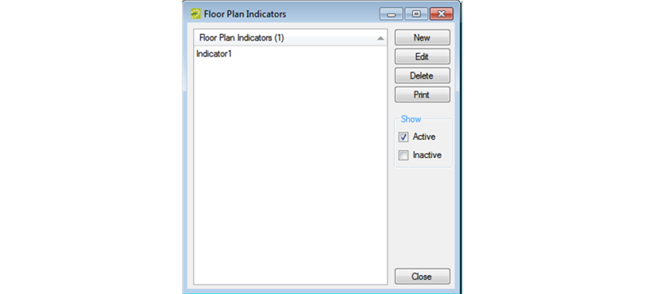
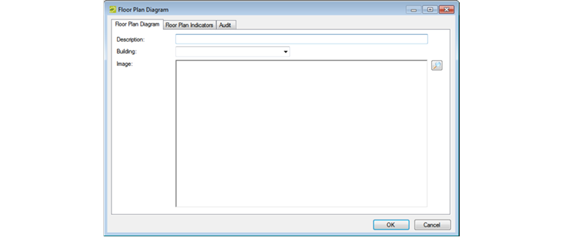

Configuring Floor Plans
This optional feature, enabled with an EMS Floor Plans license, allows users to view available rooms and book a space directly from a floor plan image in or .
This topic provides information on:
Configure Floor Plan Indicators
Configure a Floor Plan Diagram
Map a Floor Plan
Configuring floor plans in the Floor Plan module is a three-step process:
- Configure the floor plan indicators (the images used indicate whether a room is available or unavailable for a floor plan). For example, you might use something as simple as a green square to indicate that a room on a floor is available and a red square to indicate that a room on a floor is unavailable.
- Configure a floor plan diagram for each floor of each building for which a floor plan applies. A floor plan diagram is a drawing, or outline, usually to scale, that shows the relationships between rooms, spaces, and other physical features for one floor of a building.
- Map your floor plan indicators to rooms on your diagrams using the Floor Plan Configuration utility.
The availability of each reservable space ultimately determines the indicator (available or unavailable) that shows on a floor plan in or .
Configure Floor Plan Indicators
- On the EMS menu bar, click Configuration > Facilities > Floor Plan Indicators. The Floor Plan Indicators window opens, listing active indicator sets currently configured in your EMS database.

Tip: To see all indicator sets regardless of status, under Show, click Inactive.
- Click New. The Floor Plan Indicator dialog box opens.
- In the Description field, enter a name or description for the new floor plan indicators (max 50 characters including spaces. You can name indicators something as simply as Indicator Set 1, or if you are using different indicators for different floor plans in different buildings, you could identify them by building, for example, Memorial Student Union indicators, Fifth Floor Conference Room indicators, and so on.
- Next to the Image field, click Search to browse to and select an image to use for the available indicator.
- Next to the Secondary Image field, click Search to browse to and select an image to use for the unavailable indicator.
Note: The image must be in .gif, .jpeg, .jpg, .bmp, .wmf, or .png format.
- Click OK. Your new floor plan indicators are added as active. Optionally, select Inactive to deactivate the set.
Configure a Floor Plan Diagram
You must configure one floor plan diagram for each floor that will be available for booking in and the .
- On the EMS menu bar, click Configuration > Facilities > Floor Plan Diagrams. A blank Floor Plan Diagrams window opens.
- Optionally, in the Building dropdown list, select (all), or select a specific building to see a list of floor plans for all buildings or for the selected building in the window.
- Click New. The Floor Plan Diagram dialog box opens on Floor Plan Diagram tab.

- In the Description field, enter a name or description for the new floor plan diagram (maximum of 50 characters, including spaces).
- On the Building dropdown list, select the building for which you are configuring the floor plan diagram.
- Next to the Image field, Search to browse and select the image to use for the floor plan diagram.
Note: Image files must be gif, .jpeg, .jpg, .bmp, .wmf, or .png. Optimal image size is 1024 x 768.
- Open the Floor Plan Indicators tab, and on the Available list, select the floor plan indicator (CTRL-click to select multiple floor plan indicators) you wish to use for this diagram, and then Move (>) to the Selected list.
- Click OK. The Floor Plan Diagram dialog box closes and you return to the Floor Plan Diagrams window with the newly configured floor plan diagram automatically selected.
Map a Floor Plan
- Log in to the Floor Plan Configuration module; then the Configure Rooms option shows above the Login fields on the main window.
Configure Rooms Option

- Click Configure Rooms. The Configure Rooms page opens.
Configure Rooms Page

- On the Floor Plan dropdown list, select a floor plan diagram. The available indicators that are associated with the floor plan diagram are displayed below the selected diagram.
- Drag an available indicator and place it as needed to indicate where a room (reservable space) is located on the floor.
- Repeat the above steps until you have identified all the reservable spaces on the floor.
- For each indicator, do the following:
- Click on the indicator to open a Room Details dialog box.
- On the Rooms dropdown list, select the room for the indicator, and then click Save.
Note: To filter the list of available rooms, under Filter Options, select a specific floor and/or room type. An indicator is not saved to a floor plan diagram until you select a room for it.
- Close the Floor Plan Configuration module.